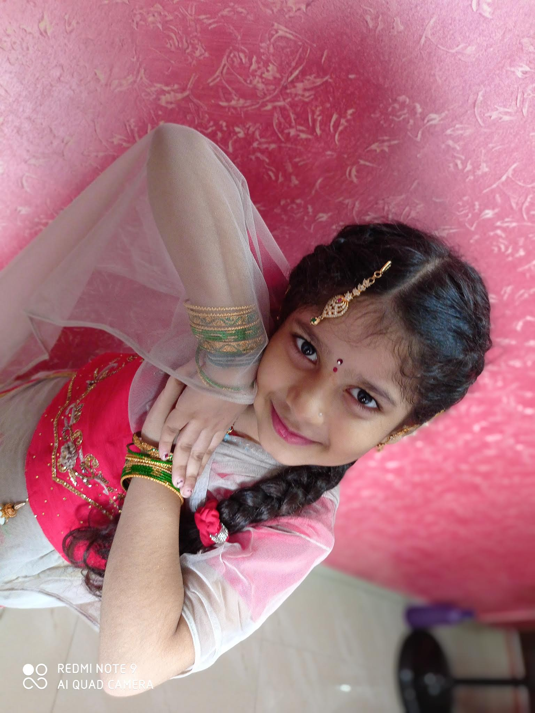

My sister is very caring and loving she is very cute and very hardworking..she is very playfull.. she never make me mad as she is my responsibility ..As a brother it is my responsibility to look after her in every aspect and every moment .. i would act as agaurdian angel forever untill i die... i would never get bored talking to her .... and playing with her
i love my sister..so much